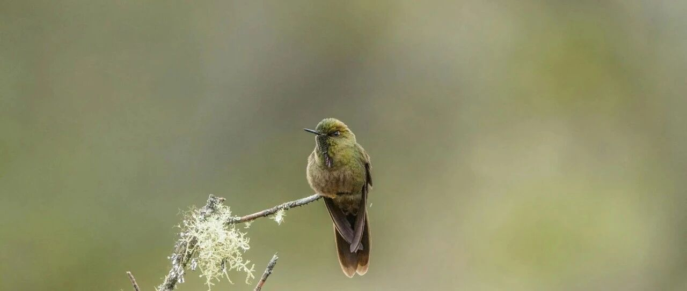

走过风暴海~
大饼站上9.4万美元，再创历史新高。
看这趋势，突破10万美元没有悬念，但10万美元以后怎么走，会不会下跌，我也不知道。
目前就是跑一跑量化，收益率很不错；现货只剩一枚留着观察市场。
对应的MSTR这两天涨疯，目前473美元，我385美元卖出，卖飞了。
随着它买入的大饼越来越多，只要大饼继续涨，它的股价也会继续涨，因为总盈利变多了，目前预计是盈利175亿美元。
美股方面，英伟达发布财报。
第三财季营收350.8亿美元，同比增长94%；净利润为193.09亿美元，同比增长109%
嗯，比市场预期的高了点。
但和我个人预计的数据很贴合，基本上没有什么出入。
英伟达的同比增速依然迅猛，但环比增速放缓到20%以内，所以近期震荡的话，不奇怪，有可能会有140美元以下的价格闪现。
现在看英伟达，短期没有意义，中长期看好，明年底保守预计会走到175+美元。
美股七巨头普遍微跌。
生物医药股迎来反弹:
礼来涨了3.25%，修复753+美元；诺和诺德涨了2.57%，修复105+美元。
联合健康涨了4.07%，站上600美元。我家庭账户减仓了5%，成本进入两位数区间。
这两年，我个人有两个成长很明显的阶段，一个是22年中下旬，一个是今年中旬。
22年那会，我在丽水龙泉弄了个宅子，屋前种满月季，屋后是菜园，时不时去住上一段时间。
不是去附近钓鱼、游泳，就是坐在屋里巨大的落地窗前看窗外的风景，喝茶，然后躺椅上睡觉。
就这样山居了大半年，转眼到了22年中下旬。那时候的我，每天会想很多很多的事，关于自己，关于家庭，关于未来。
慢慢地，开始意识到过往的自己，其实是有瑕疵的，活在世俗的眼光里。
人生最重要的事情，就是如何清楚地认识自己。
我是谁，我的性格如何，我有什么优缺点，我适合做什么，我喜欢或不喜欢什么样的生活方式。
这些问题，以前终日忙忙碌碌，没有时间想清楚，当然，这也是我们目前的教育体制最大的缺失。
残酷的社会压力，逼迫我们通过复制所谓的成功道路来获取社会资源。
我想明白了以后，22年中下旬开始有了个很明显的改变，知道自己是谁，想往哪里去，怎么做。
以前我喜欢在网上冲浪，跟人交流沟通，从22年底开始，我已经不想了，人各有命，尊重他人命运。
遇到不喜欢的开始直接拉黑，节省自己的精力和元气。活得更返璞归真了，喜欢就喜欢，不喜欢就不喜欢，讨厌就直说……用现在的话来说，更通透了。
不断成长的群体，到头来总会经历一个，“为别人眼中的自己活着”，到“为自己心中的自己活着”的变化过程。
从那会开始，全力做好美元资产的布局和筹备，跳出信息茧房的束缚，照顾好身边能跟得上的人，给家人创造始终处于有选择的境地。
这两年下来，完成得挺好的，回报率也很满意。
我们通常会过于强调外部因素对我们的限制和影响，动不动以“普通人”来安慰自己在筹划和行动上的惰性。
而完全忽视了人的内在动能，才是决定我们能走到什么位置的根本因素。
另一个，是今年中旬。
我在今年4月初到8月下旬，开始携带家人一起去走了韩国、日本、美国、加拿大、澳洲、新西兰、新加坡和香港。
封闭了三年，对世界的变化，还停留在印象层面。然后走出去，看和经历了很多自己想了解的东西。
我小儿子在1-3岁，也就是疫情前，去过日本和香港，但早已没有印象；老二去的地方多一些，但印象也开始很模糊…
一路上，孩子们有问不完的问题，也对各种社会现象和人群素养、习惯等很感兴趣。我们每天都在讨论，从历史到当下，从大陆到海外…
慢慢地，人就开始进入精神和认知层面的蜕变，不仅是我，孩子们也有很明显的成长。
我开始很清晰地意识到，经历是最好的老师。
以前，我总在想，到底是什么东西，让一些学生时代非常优秀的人，后来成了非常平凡的人？
而又让学生时代看起来平平无奇的一些人，后来做出了一些似乎超越了他水平的事情？
以前我认为一定是成长。
在这之后，我突然发现不是，成长只是过程，并不是根源。
根源，是一个人的渴望。
这也是我过往所焦虑的，孩子身上似乎少了点什么东西。
但一直没想明白，除了老大以外，老二老三到底是缺了点什么？那时候，我突然想明白了，是这俩孩子，都没有什么渴望，属于无欲无求的状态。
这点跟我不太一样，哈哈，就像动物园里的老虎，终日被人投喂惯了，已经丧失了本能。
然后我们开始着手去激活这俩孩子内在的渴望，东西不再轻易能得到，付出不一定有好的回报，在鼓励和奖励之外，偶尔也会穿插进行一些挫折教育。
目前来说，进度还不错，效果正在一点点出来。人也更有耐心和韧性了。
22年中旬后，我觉得认识自我是最重要的。
但现在，我觉得更重要的是:对自我的认识，一定要建立在自己和世界不断交互的反馈上。
其实就是不断的试错，最终才逐渐收敛到一个真实值。
想当然或者被外部舆论裹挟所产生的错觉，往往会误导一个人，造成对自我的认识造成极大偏差。
人生任何一个阶段的筛选，都只是一种形式，别被这些一时的标准迷惑。
定义你最终归宿的，一定是你能力和欲望综合的那个真实的你。
在22年中下旬和今年中旬，我曾两次穿过风暴海，此时，海面风平浪静，晴空万里。
我很享受它。
就这样吧。